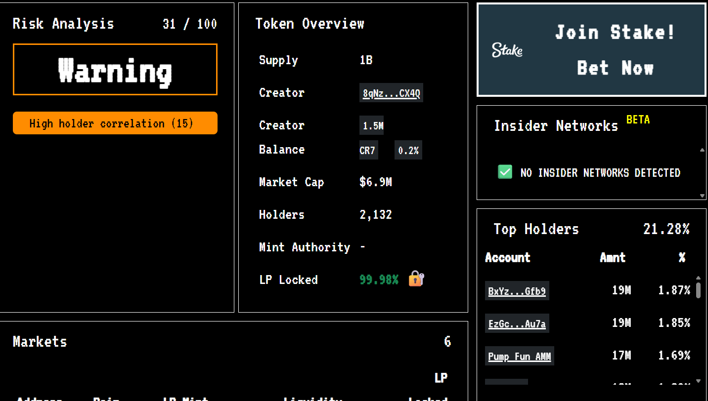
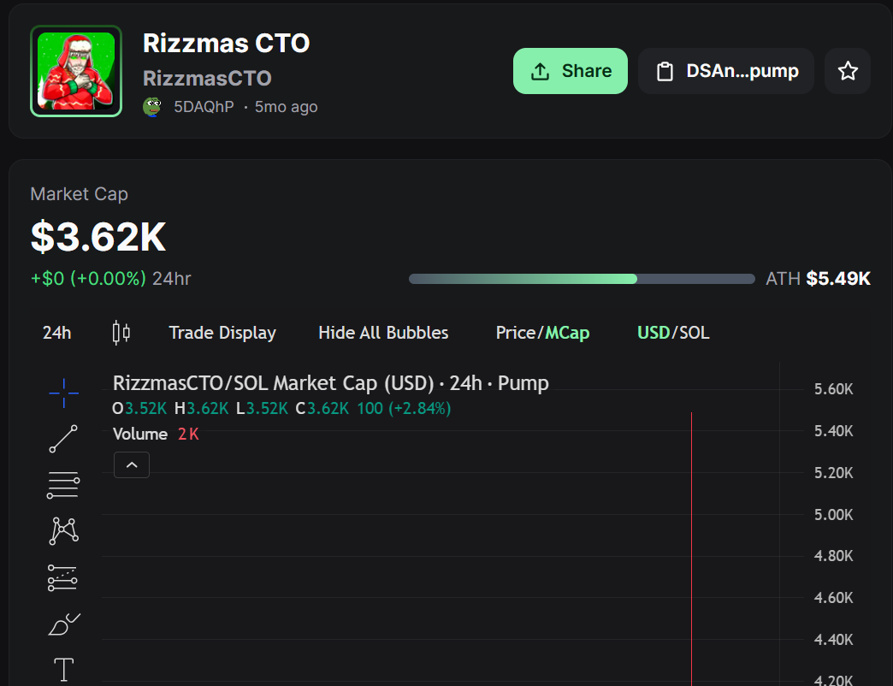
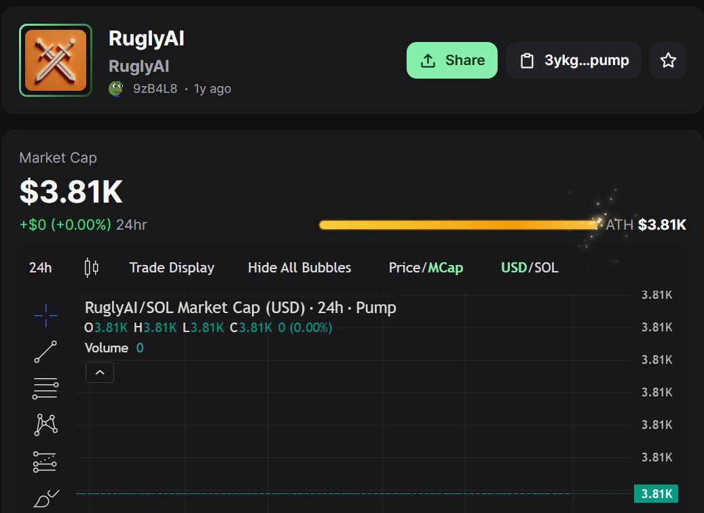

1. Case Overview
The CR7 token appears to be a coordinated meme coin launch leveraging the global popularity of Cristiano Ronaldo. The investigation identified structured promotion, coordinated wallet activity, Jito bundle execution, on-chain metadata linkage, cross-chain movement, and final routing toward centralized exchange infrastructure.
| Token | CR7 |
|---|---|
| Blockchain | Solana |
| Token / Mint | XGbMLzy8r7iJN96huatiyv3VtJ3o1VYjpVzSz7Zpump |
| Primary Creator / Operator Wallet | 8qNzt6DxDtZYj8jhrm8NP7sNsMz1QzudymKxS5GPCX4Q |
| Launch Platform | Pump.fun |
| Bundle Platform | Jito |
| Website | cr7.life |
2. Token Launch & Bundling Activity
The token launch was executed using Jito bundling. This indicates coordinated transaction submission, priority execution, and multi-wallet participation during the token launch period.
Tools Used
- Jito Explorer
- Solscan / Solana Explorer
- Pump.fun
Interpretation
- Planned transaction ordering
- Validator tip observed
- Coordinated wallet participation
- Structured launch execution

3. Promotional Campaign Evidence
Multiple paid and coordinated promotions were observed across X/Twitter, Telegram, and influencer-style channels. The campaign narrative focused on Ronaldo’s “last World Cup” theme to create urgency, legitimacy, and retail FOMO.
Tools Used
- X / Twitter OSINT
- Telegram OSINT
- Manual screenshot review
Observed Pattern
- Direct contract sharing
- Early-entry language
- Paid promotion indicator
- Football / Ronaldo narrative engineering


5. Telegram & Influencer Activity
Telegram evidence shows early contract sharing and call-to-action messaging. The identity cluster links Telegram promotion to the X identity @HardSnipe.
Tools Used
- Telegram OSINT
- X / Twitter profile review
- Cross-platform identity matching
Observed Identity Cluster
- Telegram channel: Ev’s Alphas
- Telegram username: @IamRekt
- X account: @HardSnipe


6. Website & Domain Evidence
The CR7 website was used as part of the token campaign. WHOIS and DNS evidence show privacy-protected registration and AWS-based infrastructure.
Tools Used
- WHOIS / RDAP lookup
- DNS lookup
- Browser inspection
- Website review
Infrastructure Indicators
- Domain: cr7.life
- Registrar: Gandi SAS
- Registrant redacted for privacy
- AWS nameservers / Amazon infrastructure


7. Metadata & Token Structure
On-chain metadata confirms that the CR7 token directly embeds the X account and website reference. This is one of the strongest creator-level campaign linkage points in the investigation.
Tools Used
- Solana token extension / metadata view
- IPFS gateway
- Manual JSON inspection
Metadata References
twitter: https://x.com/CR7TheLastDancewebsite: https://cr7.lifecreatedOn: https://pump.fun


8. Fund Flow & Cross-chain Activity
Funds were swapped, bridged, and routed across chains. The flow indicates structured liquidity extraction and consolidation.
Tools Used
- deBridge Explorer
- Blockscan
- Etherscan
- Solscan
Observed Flow
- Solana wallet activity
- WSOL → USDC swaps
- deBridge movement
- Ethereum-side USDC inflows


9. Ethereum Execution-layer Routing / Beaverbuild
Ethereum-side analysis shows that funds moved through an intermediary address associated with builder / execution-layer infrastructure. This adds another abstraction layer between source and destination.
Tools Used
- Etherscan token transfers
- Etherscan state difference view
Observed Intermediary
0x555CE236...2210cC35b
Observed as source of repeated USDC inflows.

10. Insider Network Analysis
Wallet clustering and risk analysis show interconnected accounts, high holder correlation, and centralized ownership indicators.
Tools Used
- Bubblemaps
- RugCheck
- Pump.fun
- Manual wallet clustering
Key Risk Indicators
- High holder correlation
- Centralized creator balance
- Connected account structure
- Launch-period insider activity



11. Comparative Tokens — RuglyAI & RizzmasCTO
RuglyAI and RizzmasCTO are treated as supporting pattern evidence. They show similar campaign-style token launches, low-liquidity behavior, and naming alignment with the CR7 account history.
Tools Used
- Pump.fun
- Token page review
- Username history comparison
Purpose
These tokens support repeated operational behavior, but the primary case remains CR7.


12. Final Destination & Coinbase Exit Indicators
Post-launch fund movement indicates conversion and routing toward centralized exchange infrastructure. The following wallets were identified as Coinbase-related hot wallet / USDC exit endpoints during the investigation.
Primary Exit Wallet
4NyK1AdJBNbgaJ9EsKz3J4rfeHsuYdjkTPg3JaNdLeFw
Additional Coinbase Hot Wallet Indicators
D89hHJT5Aqyx1trP6EnGY9jJUB3whgnq3aUvvCqedvzfFpwQQhQQoEaVu3WU2qZMfF1hx48YyfwsLoRgXG83E99QGJRs4FwHtemZ5ZE9x3FNvJ8TMwitKTh21yxdRPqn7npE9obNtb5GyUegcs3a1CbBkLuc5hEWynWfJC6gjz5uWQkEH8sMJSCQxfKiFTCfDR3DUMLPwcRbM61LGFJ8N4dK3WjS
Additional Coinbase-related Wallet / Transaction Indicator
2AQdpHJ2JpcEgPiATUXjQxA8QmafFegfQwSLWSprPicm
5jioNNfUiJDCT4sXU8emFWDXSq4mGP7gKeqrhYkdEJuXqMcmiLu18BQmNf4fjueNtmtoC9kzBMW2UY91K8XTDMKY
13. Attribution Conclusion — Who Is Behind This?
A confirmed real-world legal identity was not established from publicly available blockchain and OSINT evidence. However, the investigation identified strong attribution indicators linking the CR7 token to a coordinated campaign infrastructure and a central operator wallet.
The creator / operator wallet:
8qNzt6DxDtZYj8jhrm8NP7sNsMz1QzudymKxS5GPCX4Q
was directly involved in token creation, transaction execution, swap activity, and fund routing.
- On-chain metadata explicitly embeds:
https://x.com/CR7TheLastDancehttps://cr7.life
- The same identity is used across:
- Token metadata
- Website infrastructure
- Social media promotion
- Jito bundle execution confirms coordinated launch behavior
- Wallet clustering and temporary accounts indicate structured control
- Funds were routed through swaps, bridges, and ultimately into Coinbase-related wallets
@CR7TheLastDance identity at the time of creation. This strongly suggests that the
same operator (or controlling entity) managed both the token deployment and its promotional infrastructure.
@CR7TheLastDance) is directly linked to the token through metadata
and promotional activity, publicly available evidence does not confirm the real-world individual behind the wallet.
- Centralized control of token deployment
- Metadata-linked campaign identity
- Structured promotion across X, Telegram, and web infrastructure
- Multi-wallet execution using Jito bundling
- Liquidity extraction and routing to centralized exchanges
4. Social Media Manipulation & Identity Reuse
The CR7 social account shows naming history linked to prior token identities. This supports account reuse across multiple token campaigns.
Tools Used
Observed Username Pattern